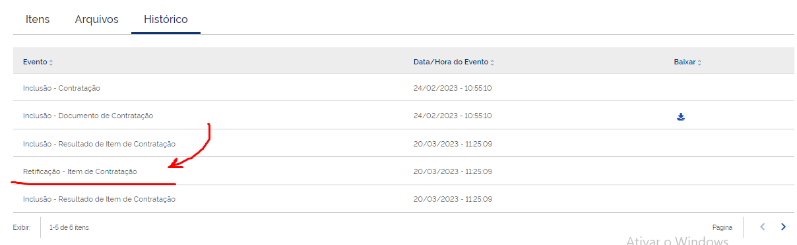

Campo da API não funciona? função não funciona?
Situação
o usuário tentou criar ou utilizar nossa api atravez do swagger ou outro sistemaQuando Ocorre?
Quando o usuário alegar que não está conseguindo realizar alguma função na API e a mesma não responde.Deve certifica.
Se quem está fazendo essa afirmação de fato é um servidor ou funcionário ressponsável pelo sistema.Solução sugerida
Solicitar o máximo de informações possíveis para facilitar a análise do técnico.Modelo de Resposta para Chamados
Prezado(a),
Espero que esta mensagem o encontre bem.
Gostaríamos de solicitar suas evidências dos testes realizados no ambiente de treinamento em https://treina.pncp.gov.br/api/pncp/swagger-ui/index.html?configUrl=/pncp-api/v3/api-docs/swagger-config.
Entendemos a importância de garantir que todas as funcionalidades e recursos estejam adequadamente testados antes da implantação em produção. Para facilitar a revisão e verificação dos testes realizados, solicitamos que você forneça evidências claras e detalhadas dos testes conduzidos no ambiente de treinamento.
Por favor, inclua informações como:
Uma descrição detalhada dos cenários de teste abordados.
Capturas de tela ou gravações de vídeo que demonstrem os testes realizados.
Quaisquer resultados ou observações relevantes obtidos durante os testes.
Se precisar de assistência adicional ou se tiver alguma dúvida sobre os requisitos de evidência, não hesite em nos contatar. Estamos aqui para ajudar e garantir que possamos revisar seus testes de forma eficaz e completa.
Agradecemos antecipadamente sua cooperação e prontidão em fornecer as evidências solicitadas. Sua contribuição é fundamental para garantir a qualidade e confiabilidade de nossos sistemas.
Atenciosamente,
Equipe PNCP.
Atribuições e responsabilidades
(Atendentes)Palavras-chave
ErroReferências
5893940O usuário está solicitando credenciamento para o ambiente de produção?
Situação
Já possui acesso ao ambiente de treinamento e agora quer ter o acesso ao ambiente de produçãoQuando Ocorre?
ao enviar as informações no nosso portalDeve certifica.
Vamos láAntes de subir o chamado para o N3 você deverá se certificar que o usuário enviou os 5 links de testes necessários para obter as credenciais
o primeiro teste é:
o usuário tem que incluir ao menos 1 item de contratação
o segundo teste é:
Incluir ao menos um resultado dos itens de uma contratação.
o terceiro teste é:
Inclusão de ao menos uma ata de registro de preço
o quarto teste é:
Recomenda-se que sejam utilizados os serviços de retificação da contratação, do resultado e de atas para a realização de um teste mais completo da aplicação.

Caso o usuário tenha enviado 4 ou 3 links você deverá entrar nos links e verificar se um dos links existe a retificação clicando em historico.
e o quinto teste é:
Caso o Portal/Sistema seja responsável pela gestão de Planos de Contratação Anual - PCA e Contratos, é necessário que sejam realizadas simulações que envolvam a inclusão/retificação/exclusão de PCA’s e Contratos, conforme parâmetros descritos no Manual de Integração do PNCP.